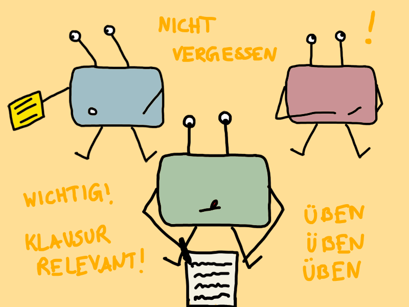

Neuste Blogbeiträge:

Prüfungsphase leicht(er) gemacht
07.03.2021
Wie ich mich auf Klausuren vorbereite, welche Lernmethoden mir helfen und wie man sich nicht in der Prüfungsphase verrückt machen lässt.

Die Not-To-Do-Liste
21.02.2021
Jeder von uns hat schon mal eine To-Do-Liste geschrieben. Aber habt ihr schon mal eine Not-To-Do-Liste geschrieben?

Mit dem Ü-Boot auf Erkundung gehen
07.02.2021
Hier erfahrt ihr, was Neugier mit Lernen und Kreativität zu tun hat, wer die kleinen Forscher sind und wie ihr mehr auf Erkundungstour gehen könnt.
Annimationen:
Hungrige Schildkröte
Bearly awake